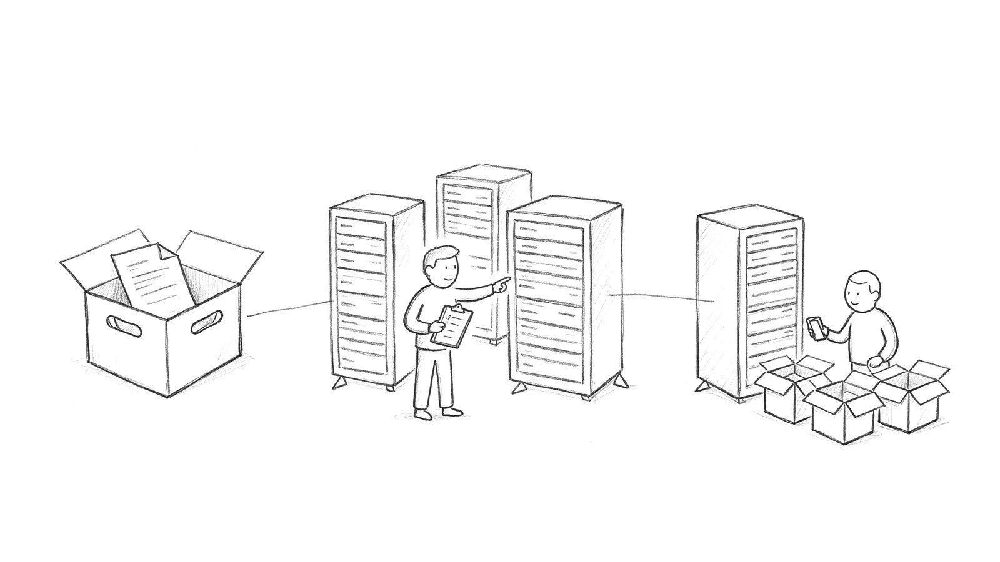
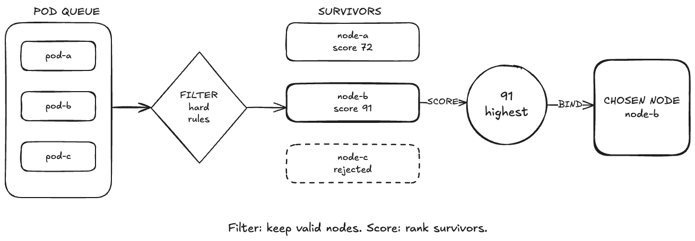
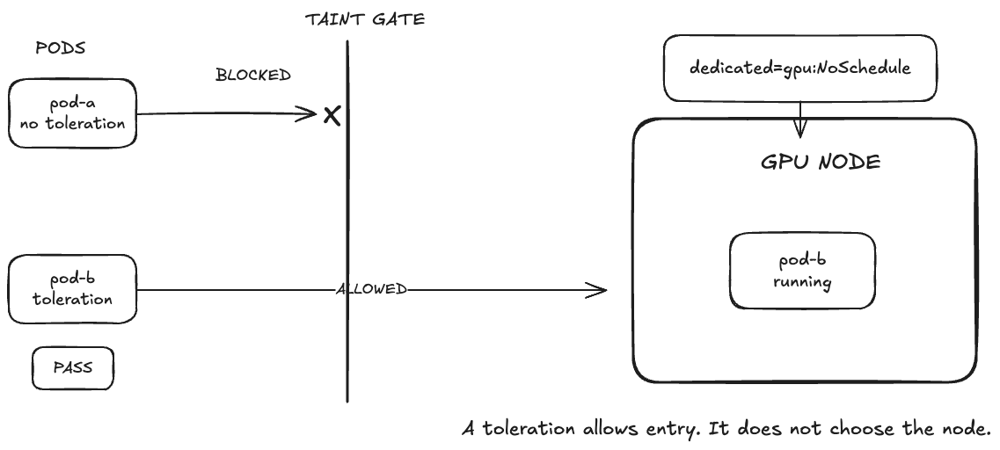

Module 4 · Kubernetes internals
Scheduling and Controllers
How Kubernetes chooses a node and keeps the workload moving toward the desired state.

How a Scheduling Cycle Processes a Pod
Queue → filter → score → bind

Filter
Remove nodes that fail a hard requirement.
Score
Rank only the nodes that survived filtering.
Bind
Write the selected node to spec.nodeName.
Diagnosing a Pending Pod
Read the FailedScheduling event, then test the rule behind each reason.
$ kubectl describe pod too-big -n m4-lab Events: Type Reason From Warning FailedScheduling default-scheduler 0/5 nodes are available: 4 Insufficient cpu, 1 untolerated taint. preemption: 5 Preemption is not helpful
Insufficient cpuResources
requests vs allocatable
didn't match selectorLabels
selector vs live labels
untolerated taintPolicy
taints vs tolerations
preemption not helpfulConstraints
removing Pods still cannot satisfy every filter
Taints, Effects, and Tolerations

A taint is attached to a node.
A toleration is attached to a Pod.
A toleration permits placement; it does not choose the node.
NoExecute can evict Pods already running on the node.
dedicated=gpu:NoSchedule tolerations: - key: dedicated value: gpu effect: NoSchedule
How Kubernetes Handles an Unreachable Node
Detection → NoExecute eviction → replacement on a healthy node
Lease stops
kubelet → Node Lease
The control plane stops receiving Lease renewals from the node.
Node becomes unreachable
node-monitor-grace-period
The node controller adds the unreachable:NoExecute taint.
Pod waits
tolerationSeconds
The existing Pod remains bound until its toleration timer expires.
Replacement Pod
Deployment / ReplicaSet
The workload controller creates a replacement for a healthy node.
Key takeaways
Scheduling and Controllers
Filter removes invalid nodes; score ranks only the survivors.
Bind records the selected node in spec.nodeName.
FailedScheduling events identify the rules that rejected the Pod.
A toleration permits placement; it does not attract a Pod to the node.
NoExecute eviction uses a node-detection clock and a Pod toleration clock.
Next: observe these decisions in the Module 4 lab.